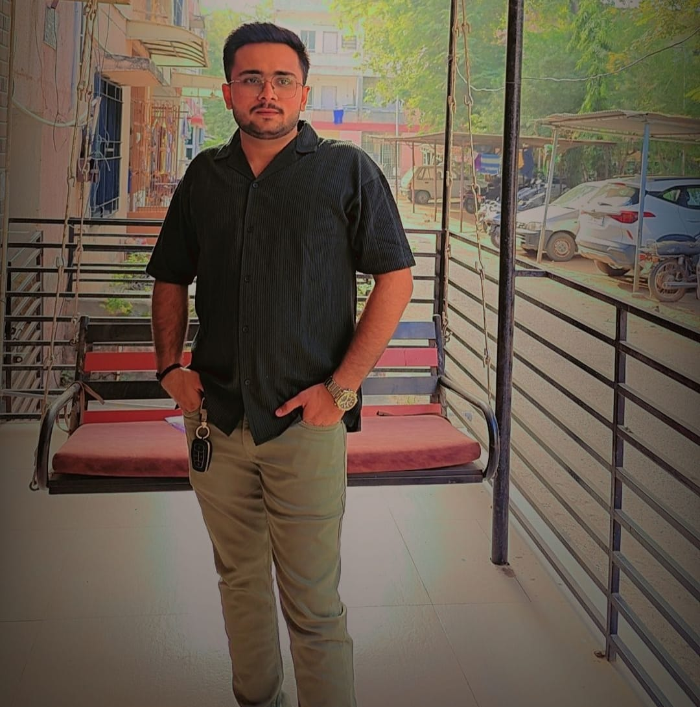

Thakkar Ruchanshu Mehulbhai
Profile
Versatile and detail-oriented Full-Stack Developer with a strong command of both front-end and back-end technologies. Experienced in building scalable, high-performance web applications from concept to deployment. Adept at writing clean, maintainable code, designing intuitive user interfaces, and optimizing server-side logic. Known for balancing technical precision with creative problem-solving, and for thriving in fast-paced, collaborative environments. Passionate about continuous improvement and staying current with the latest in software development trends and tools.
Academic Credentials
| Course | University/Board | Institution | Year | Performance |
|---|---|---|---|---|
| iM.Sc.(IT) | GLS UNIVERSITY | GLS UNIVERSITY | 2024 | 80% |
| HSC | Gujarat Secondary and Higher Secondary Education Board | Shree Narayana Guru Vidyalaya | 2019 | 84% |
| SSC | Gujarat Secondary and Higher Secondary Education Board | ST'Blaze | 2017 | 62% |
Work Experience
-
Freelancing
Full Stack Web Developer Bootcamp
- Completed an intensive, hands-on bootcamp covering HTML5, CSS3, JavaScript, React.js, Node.js, Express.js, and SQL.
- Designed secure, scalable backend services using Node.js and Express, including user authentication and role-based access.
- Utilized Git/GitHub for version control, and followed Agile practices with weekly sprints and code reviews.
- Strengthened debugging, testing, and problem-solving skills through project challenges and mentor feedback.
-
.NET Developer
National Informatics Centre (NIC) – Contract through AIRAN LIMITED
Jan 2024 – Sept 2024- Worked on the development and maintenance of web applications using ASP.NET MVC, C#, and SQL Server.
- Participated in the full software development lifecycle, including requirements gathering, design, coding, testing, and deployment.
- Implemented front-end functionality using HTML5, CSS3, JavaScript, and jQuery to create user-friendly interfaces.
- Collaborated with senior developers and project managers to deliver modules on time and according to specifications.
- Gained hands-on experience with version control systems (like Git) and debugging tools to maintain code quality.
- Assisted in troubleshooting and resolving bugs reported by QA and end users.
- Developed technical documentation and supported knowledge-sharing sessions within the team.
- Adapted quickly to government project workflows and compliance standards while maintaining high productivity
Technical Skills
-
Frontend:
- HTML5, CSS3, JavaScript, Bootstrap, jQuery, React.js, Flutter-Dart
-
Backend:
- ASP.NET MVC, C#, Node.js, Express.js
-
Database:
- SQL Server, MongoDB
-
Tools & Platforms:
- Visual Studio, Git, GitHub, Postman, VS Code, Android-Studio
-
Concepts:
- Object-Oriented Programming (OOP), MVC Architecture, RESTful APIs, Authentication & Authorization, CRUD Operations
-
Version Control & Workflow:
- Git, GitHub, Agile/Scrum basics, Debugging, Code Review
Soft Skills
- Excellent client communication and expectation management
- Strong sense of accountability and ownership of deliverables
- Self-motivated and able to work independently with minimal supervision
- Reliable in meeting deadlines and managing multiple projects simultaneously
- Detail-oriented with a focus on delivering high-quality, client-ready work
- Adaptable to diverse project requirements and industry domains
- Open to feedback and capable of iterating based on client needs
- Effective in time management and setting clear priorities
- Professional demeanor with a strong focus on building long-term client relationships
- Proactive in problem-solving and offering value-added suggestions
Languages Known
- English
- Hindi
- Gujarati